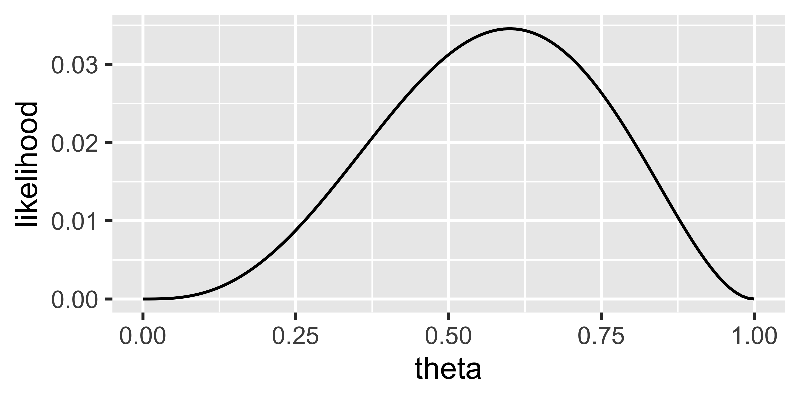
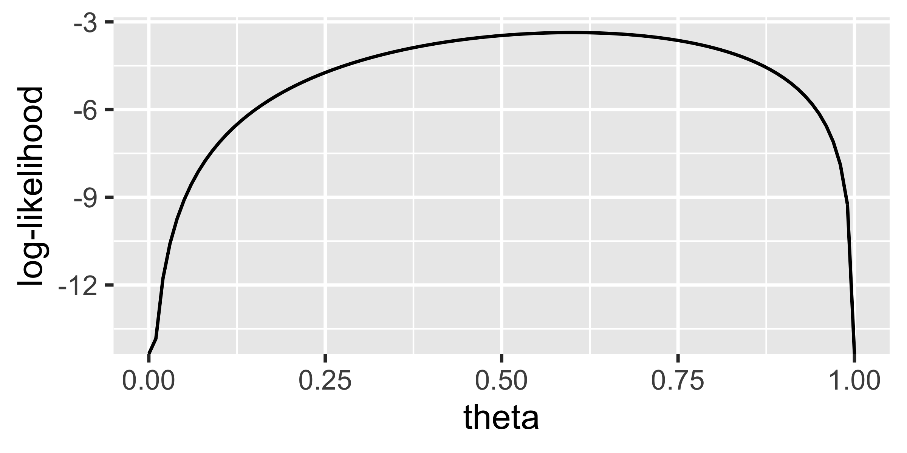
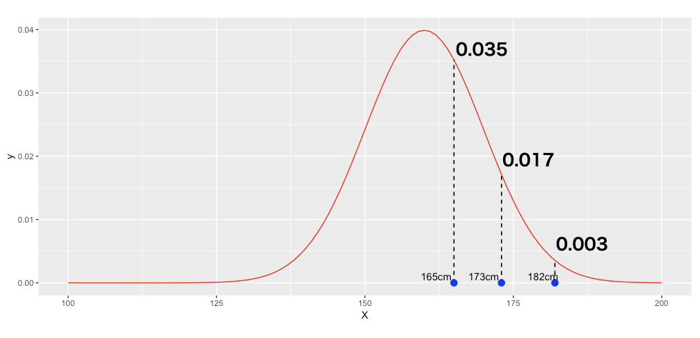
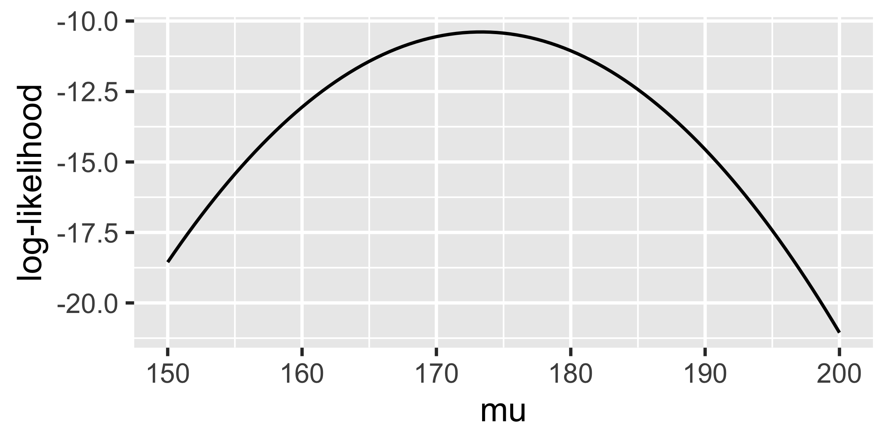
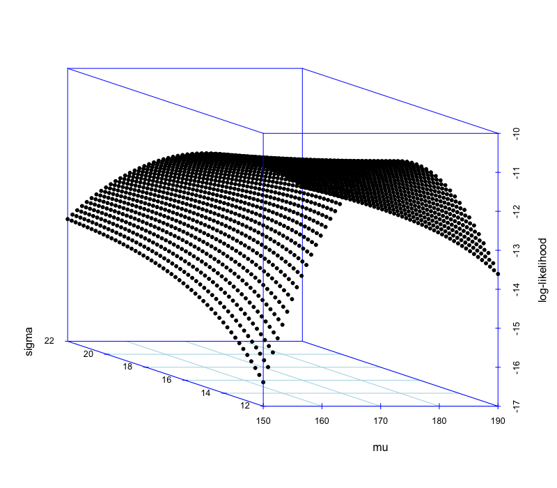

Chapter 17 確率分布とデータの関係
検定では平均因果効果を検証するため，平均値や(不偏)分散などの標本統計量がどのような確率分布に従うかを参照し，結果を判定するという使い方を行なってきました。検定はこのように，母数を推定する方法に，結果を判定するロジックが組み合わさったものなのでした。この時の母数の推定方法は，標本平均や不偏分散を推定値とする方法で，モーメント法とよばれるものです。これに対し，モデルである確率分布をデータに最も近しい形に調節することで，そのパラメータを推定値とする方法があります。ここではこの方法，最尤推定法とその根幹にある尤度という考え方を解説します。
17.1 確率モデルによる推論
もう一度，後期のテーマである統計的推論の基本を振り返ってみましょう。
私たちは，手元にあるデータの状態を記述するだけでなく，これを使って「推論」をしたいわけです。覚えていますか？ 手元のデータ(標本)において，群間に差があるかどうか！なんて考えなくても「そりゃあるでしょ」となります。微細な差でも差は差ですから，それは違いありません。問題は，手元の標本の特徴を使って，「だから人間は・・・」などと大きな主語のことを言おうとすると，ちょっと待て待て，となるわけです134。たまたま標本の数字がそうだっただけじゃないか，というわけですね。ここでいう「大きな主語のことを言おうとする」，というのが統計的推論という話なので，そもそも雲を掴むようなというか，無理難題に挑戦しているというのが大前提，何も確定的に言えないんじゃないかとさえ思えてきます。
そこをぐっと堪えて，仮に，仮にですよ？ 仮に母集団の数字が正規分布に従うと仮定できるのであれば，そこから原理的に標本統計量の特徴が導かれますから，それを使って推論しようよ，という話をしてきたのでした。
さて，今回までの話は母集団が正規分布するなら，標本統計量がある程度の幅を持った正規分布に従うので，標本平均や標本分散を使って推定しましょう，というアプローチをとってきました。平均値や分散など，標本の特徴そのものから母数を推定してきましたが，今回からお話しするのは少し異なるアプローチです。それは，の考え方の入り口であり，これを知ることで線形モデルの表現がより豊かになっていきます。
17.2 確率関数と尤度
確率とデータの関係について，改めて考えてみましょう。
確率分布の形がわかっていて，パラメータもわかっていたとします。例えば\(\theta=0.5\)のベルヌーイ分布だとか，平均値\(\mu=5\)，標準偏差\(\sigma=1\)の正規分布，といった具合に。そうすると，そこからデータがどう出てくるかを考えることができます。ベルヌーイ分布の例がわかりやすいので，それで考えてみましょう。とあるコインの表が出るか裏が出るかが，\(\theta=0.5\)のベルヌーイ分布に従う，というのがわかっていたら，きっと表(1)と裏(0)が半々で出てくるだろうな，と思えるわけです。\(\theta=0.7\)であれば，こりゃ表がよく出てくるだろうな，といったことがわかります。
ただ私たちが，確率的なことを考える時というのはもっぱら逆です。表，表，裏，表，表・・・とどうも表がたくさん出てくるという現実があり，「これのパラメータは\(\theta=0.5\)ではないのではないか(半々じゃない，イカサマコインだ)」といったように，実現値が既知でパラメータが未知な状況です。研究をしている時も，手元にデータがあって，パラメータがわからないわけです。これまで推論してきた母平均，母分散というのもパラメータですが，そこから得られたと思しきデータを使って推論してきたのでした。
もう少し考えを深めてみましょう。ベルヌーイ分布は次のような確率分布です。 \[p(k) = \theta^k (1-\theta)^{1-k}\] ここで\(k\)は1か0のどちらかの数字をとります。表が出る確率\(p(1)\)は，\(\theta^1 ( 1-\theta)^0 = \theta\)になり135，裏が出る確率は\(p(0) = \theta^0(1-\theta)^k=(1-\theta)\)になる，ということを数式で書くとこうなるのです。試しに\(\theta=0.7\)とすると，表が出る確率が\(0.7\)で裏が出る確率が\(0.3\)になっていますね。わかりやすい。
ここで\(\theta=0.7\)，のようにパラメータがわかっている状況は普通とは逆なのですから，パラメータがわからない未知のまま(\(\theta\)の記号のまま)考えを進めたいと思います。もしコインが表，表と2回続けて表が出るとすると，その確率は\(\theta \times \theta = \theta^2\)です。3回続けて出たら\(\theta^3\)，表，表，裏，裏，表なら\(\theta^3\times (1-\theta)^2\)，と文字を使って表現できます。ここで\(\theta\)は0から1の間を取る数字ですから，横軸に\(\theta\)をとり，，縦軸に\(y=\theta^3\times (1-\theta)^2\)として関数のグラフを書くことができますね。これを書いたのが図1.1です。

「表，表，裏，裏，表」と出たコインのパラメータの関数
これはパラメータがどのあたりにありそうか，という情報を持ったグラフになっています。このように，データが既知でパラメータが未知のとき，パラメータの関数のことをといい，このグラフの縦軸\(y\)のことを と言います136
尤度関数は確率関数と形Formは同じですが，考える向きを逆にしたものだと言えます。つまり，
確率関数；パラメータがわかっている\(\to\)実現値がどのように出てくるかを表現
尤度関数；実現値がわかっている\(\to\)パラメータがどのあたりならこのデータが得られそうかを表現
という関係にある，というわけです。
17.3 最尤推定
さてこの尤度関数，横軸が\(\theta\)ですから，いろいろな\(\theta\)の時にこのデータが得られる可能性はどれぐらいありそうか，というグラフだといえます。そうするとこの山のピーク，ここでは\(\theta=0.6\)なのですが，これが「このデータから考えられる最もありえそうなパラメータの値」ということになります。尤度が最大になるところをそのパラメータの推定値とする，という意味で，この推定値をといい，この方法でパラメータのことを推定する方法をといいます(さいゆう推定，と読みます。略してML法とかかれることも)。
5回中3回表が出たから，パラメータは\(0.6\)なのは当たり前じゃないか，と思ったかもしれません。それは標本平均を使って推定した，ということですが，同じ現象・データなので推定値が同じになるのはまあ当然のことです。答えは同じなのですが，その答えを出した筋道が違う，ということに注目してください。
最尤法は，関数の最大値を求めることによって最尤推定値を算出します。「関数の最大値を求める」という方法は，具体的には微分をつかって極限を求めることになります。微分について，高校数学で学んできたことを思い出して欲しいのですが，要するに「関数の傾きがフラットになる(傾き\(0\))ところがその関数の最大値，あるいは最小値になっている」という性質から，傾きの関数を求めてそれがどこなのか，を突き止める方法であり，まさに今回のようにピークを求めるにはもってこいのツールだったわけです137 138。
細かい数式はともかく，要するに関数のピークは最も尤もらしい，つまりこのデータが出てくる確率を最大にする値としてパラメータを推定できるということです。
ここで一点，注意を促しておきます。尤度関数は，確率分布関数の未知数と既知数を取り換えただけのものです。確率分布関数は，確率の出目(実現値)に対応する確率の一覧を数式で表現したものだったことを思い出してください。また，確率とは非負で，その総和が1.0になるような数字なのでした。ここで図1.1を見ていると，これもなんだか確率分布のように見えたりもしますが，実はこれは確率分布ではありません。というのも，この関数の面積が1.0にならないからです。
簡単な例で解説しましょう。コイントスを2回連続でやることを考えてみたいと思います。この時何回表が出てくるかは，0回(裏・裏)，1回(裏・表，表・裏),2回(表・表)のいずれかです。
| \(\theta\) | 0回 | 1回 | 2回 | 合計 |
|---|---|---|---|---|
| 0.00 | 1.00 | 0.00 | 0.00 | 1.00 |
| 0.25 | 0.5625 | 0.375 | 0.0625 | 1.00 |
| 0.50 | 0.25 | 0.50 | 0.25 | 1.00 |
| 0.75 | 0.0625 | 0.375 | 0.5625 | 1.00 |
| 1.00 | 0.00 | 0.00 | 1.00 | 1.00 |
| 合計 | 1.9525 | 1.175 | 1.9525 |
\[tbl::24_01\]
表1.1をみてください。これはコインを2回トスして，何回表が出たかについて，\(\theta\)をいろいろに変えて計算してみた表です。例えば\(\theta=0.0\)であれば，完全に裏しか出ないコインなのですから，0回の確率が100%で，1回，2回出る可能性は0%です。この行方向の総和は\(1.00\)になっています。どの行についても，行の総和は\(1.00=100\%\)で，\(\theta\)が決まっているとしたらデータがどうなるかの確率は計算できるわけです。
一方，2回コイントスして，1回も表が出なかったという事実が先にあったとします。表1.1でいうところの0列，縦方向にみるのですね。\(\theta\)は0から1のどこかにあるのですが，\(0.00,0.25,0.50,0.75,1.00\)の4パターンだけピックアップしてみてみても，その総和は1.00を超えています。これを見ると，1回も表が出ないパターンというのは，\(\theta=1.0\)であるはずがなく，\(\theta=0.75\)のような高い確率でもなさそう，\(0.5,0.25\)とパラメータが小さくなるに従って「そうなりそうな度合い」は高くなっていき，\(\theta=0.00\)であるというのが一番あり得そうではありますが，\(\theta=0.00\)の確率が高い，とは言えないのです。列の総和が1.00にならないから，これ(尤度)は確率じゃないからです。尤度は確率ではないのです139。
尤度が最も高い，というのはそうなる可能性が最も高いわけですが，この数字は確率じゃない–ちょっと面倒な感じですが，言葉を正確にいうとこうなりますので，ご容赦ください。あくまでも，もっともらしさ，それっぽさが最大になるように推定値を定めるというのが最尤推定の正しい説明になります。
17.4 対数と尤度
ところで，尤度の最大値を求める計算は，微分を使うのでちょっと面倒だな，と思うかもしれませんが，具体的な数値にしてしまえばそれほど大変ではありません。例えば先ほどの例，ベルヌーイ試行(コイントス)で表が3回，裏が2回でた，という場合ですが，\(\theta=0.3\)であれば， \[0.3^3 \times (1-0.3)^2 = 0.3 \times 0.3 \times 0.3 \times 0.7 \times 0.7 = 0.01323\] と計算できます。最尤推定値である\(\theta=0.6\)は，その尤度が \[0.6^3 \times (1-0.6)^2 = 0.6 \times 0.6 \times 0.6 \times 0.4 \times 0.4 = 0.03456\] である，と計算できるわけです。もちろんRなどコンピュータに計算させれば良いわけですが，問題はこれ，数字が小さいってことなんですよね。
そもそも確率は1を超える数字になることがないので，小さい数字に小さい数字を次々掛け合わせていくと，どんどんと桁数が小さくなります。コンピュータは計算機ですから，「掛け算せよ」と言われたらどこまでも掛け算はしますが，その内部では数字とは言え0/1のビット情報の連なりで，物理的上限があるので無限に小さな数字を計算できるわけではありません。無限どころか，例えば今のPCは64ビットOSが基本ですが，どんなコンピュータも数字に割り当てれる上限を持っています140。64ビットOSの場合は，1つの数字に64ビットの情報を持たせますが，これは桁数でいうと\(2^{64}\)，およそ20桁の計算が限界です。何が言いたいかというと，コイントスが全部で5回ぐらいならコンピュータで計算できますが，10回，20回となるとだんだん限界に近づいて，そのうち「これ以上は小さすぎて計算できません！」というエラーが出てくるということです。
そこで実際の計算には少し工夫が必要です。尤度関数をそのまま使うのではなく，尤度関数の対数をとって計算するというのがそれにあたります。
というのは，その数字を何乗したかというのを表すための表記法で，\(\log\)という記号を使います。\(a^P=M\)のときに，\(p = \log_a M\)と表記し，この時「\(p\)を\(a\)を底とした\(M\)の対数」という言い方をするのです。これが便利なところとして，対数にしても数字の大小関係は変わらないこと，掛け算が足し算に，割り算が引き算に変わるので計算がしやすいことなどが挙げられます141。記号を使ってより正確に書いておきますと，次の通りです。
\(M > N\)のとき，\(\log_a M> \log_aN\)；例えば\(100 > 10\)だが，\(\log_{10} 100 = 2, \log_{10} 10 =1\) より\(\log_{10} 100 > \log_{10} 10\)です。
\(\log_a MN = \log_a M +\log_a N\)；例えば\(\log_2 8 =3,\log_2 16 = 4\)ですが，対数の定義より\(2^3=8,2^4=16\)という関係を表していることになります。ここで\(\log_2 8\times 16\)は，\(2^3 \times 2^4\)の\(\log_2\)をとったもの，ということになりますが，\(2^3 \times 2^4 = 2^{(3+4)}=2^7\)ですから，\(\log_2 8\times16 = \log_2 8 + \log_2 16\)と，足し算が掛け算になります。
\(\log_a \frac{M}{N} = \log_a M - \log_a N\)；これも同様に，\(\log_2 \frac{16}{8}=\log_2 2=1\)ですが，\(\log_2 16 - \log_2 8 = 3-2=1\)で計算できます。
例えば先ほどのコイントスの計算も，\(\theta=0.3\)の例について対数を取って計算すると142， \[\log(y) = 3\log 0.3 +2\log 0.7 = 3 \times -1.203973 + 2\times -0.3566749 = -4.325268\] となり，「桁数が小さすぎて計算できない」という問題が生じなくなります。また，対数をとったグラフは図1.2のようになりますが，ピークの箇所は変わらないことが確認できます143。

「表，表，裏，裏，表」と出たコインのパラメータの関数について対数をとったもの。縦軸は対数尤度
17.5 正規分布の尤度関数
対数の話は計算上の問題なので知識として頭の片隅に置いておいてもらったらOKです。それよりも，関数の形をそのまま使ってパラメータを推定できる，ということをしっかり踏まえていただければと思います。この方法だと，不偏推定量を考えるとか，標準誤差を考えるといったことがなくなるので，もしかするとこちらの方が楽だな，と思われるかもしれません。注意しておきたいのは，これは「ある推定値が得られる確率」を考えているわけ ではないことです(尤度は確率ではないので)。また，データに最もぴったり合うようにパラメータを定めた，という方法なだけで，そもそもデータに当て嵌める確率分布関数(=確率モデル)が間違っていたら，何の意味もないことに注意してください。コイントスの結果にはベルヌーイ分布(あるいは二項分布)を当て嵌めるのが正しく，他の分布–例えば正規分布–を考えると「答えは出るけど，そもそも全部間違ってる」というような話になります144。とは言えここまで見てきたように，心理学の場合は，多くのデータに正規分布を仮定できます。私たちは正規分布という「仮定」，「モデル」をおいて現象を理解しようとしているんだ，ということを忘れないでください。
そう言えば，正規分布を使った最尤推定はどうなるんでしょうね。正規分布は平均\(\mu\)と標準偏差\(\sigma\)という2つのパラメータで調整されますから，この2つのパラメータが両方未知であるという連立方程式を解くことになります。
数値例を使って考えてみましょう。第\[chapter16\]講で最初に考えた例，「ある小さな学校で身体測定をしたところ，3人の身長はそれぞれ，165cm,173cm,182cmだった」という話で考えてみたいと思います。話を単純にするために，母標準偏差は\(\sigma=10\)だとわかっていたとします。こうすることで，先ほどのベルヌーイ試行と同じで推定すべきパラメータはひとつ，\(\mu\)だけになりますから。
さて，これらのデータが何らかの正規分布，\(N(\mu,10)\)から得られたわけですが，仮に\(\mu=160\)だとすると，確率分布を描いて，実現値に対してどの程度「尤もらしいのか」を確率密度で計算できます(図1.3)。各データ点に対応する確率密度は確率ではありませんが，どの程度生じやすいかを表している数字ではありますので，このまま利用できます。Rでの計算方法はもちろん，dnorm(165,mean=160,sd=10)とすれば良いですね！

さて，これら3つのデータは同じ母集団から独立に得られているわけです。独立に，というのはデータ間に特に関連がないことですので，この3つが同時に成立する確率は掛け算で表すことができます145。これを計算すると， \[0.035 \times 0.017 \times 0.003 = 0.0000002140286\] になります。このようにとても小さい数字になりますので，対数をとって \[\log 0.035 +\log 0.017 +\log 0.003 = -13.05457\] とした方がいいかもしれません。ほかに，\(\mu=170\)ならどうか，\(\mu=190\)ならどうか，といろいろ試すことができますが，要するにこの数字(尤度)は\(\mu\)の関数になっているわけです。そこで，横軸に\(\mu\)をとり，縦軸に尤度をとってグラフを書いてみますと，図1.4のようになります。

正規分布の尤度を求める
このようにしてみると，確かに170を少し超えたあたりにピークがありそうです。ちなみにその最尤推定値は173.3であり，データの平均値と同じになります。
標本平均と同じじゃないか，と思うかもしれませんが，推定方法が違うだけで同じ母集団の推定方法なので，むしろ答えが一致してよかったね，と思ってください。ともかく，このように正規分布でも最尤推定はできます。が，今回は母標準偏差がわかっている(\(\sigma=10\))という仮定の下で計算したのでした。本来はこちらも推定しなければなりません。つまり，平均\(\mu\)と標準偏差\(\sigma\)2つの関数になるのです。
この2つの関数のグラフを書いたのが図1.5です。2つの変数で1つの対数尤度が決まるので，3次元プロットになりますし，2変数の微分方程式を解くことになるので数学的には少し面倒になりますが，同様に推定できることがわかります。最尤推定の結果は，標本平均と標本標準偏差の値と一致します146。

平均と標準偏差による2変数関数としての正規分布の対数尤度
17.6 ベイズの定理
ここまで尤度を使った推定方法について説明してきました。モーメント法と最尤法，いずれも同じ答えが出るのですがその考え方が違うというところを確認してきましたね。ここでは最後に，もう1つの推定法であるベイズ法について解説します。そのためには，ベイズ法の根本的な法則について知っておいた方が良いので，少し回りくどいかもしれませんが，まずはそこから説明していきましょう147。
17.6.1 ベイズの定理とは
ベイズというのは人の名前で，トーマス・ベイズ（Thomas Bayes、1702年 - 1761年4月17日）はイギリスの長老派の牧師であり数学者でもある人です。この人の考えた「逆確率の法則」から端を発した推定法が，21世紀の現代においてとても重要なものになってきています。ベイズ牧師の考えついた法則は非常に単純なもので，簡単に書くと次のような式で表現できます。 \[P(A|B) = \frac{P(B|A)P(A)}{P(B)}\]
例えば，ある学校の生徒数は男子が40人，女子が60人だったとします。そこからランダムに一人を選び出した時，それが男子である確率はどれぐらいでしょうか？ この確率を\(P(\mbox{男子})\)とすると， \[P(\mbox{男子})=\frac{40}{(100)}=0.4\] であることはすぐにわかりますね。
では次にという考え方を導入しましょう。これは先ほどの学校について，表1.2のように学年情報を追加した例を使って説明します。
| 1年 | 2年 | 3年 | 合計 | |
|---|---|---|---|---|
| 男子 | 15 | 12 | 13 | 40 |
| 女子 | 22 | 20 | 18 | 60 |
| 合計 | 37 | 32 | 31 | 100 |
\[tbl::24_02\]
ここでランダムに一人を選び出した時，それが「3年男子」である確率はどれぐらいでしょうか？ これは「学年は3」かつ「性別は男」なので，学年と性別の両方の条件が入った同時確率といい，\(P(\mbox{学年},\mbox{性別})\)と書きます。これは表から，次のように計算できますね。 \[P(\mbox{学年;3},\mbox{性別;男})= \frac{13}{100}=0.13\]
次に用語としてというのを考えます。これはある分割に関して全て足し上げたもの，というものですが，要するに表1.2の合計欄のことです。例えば「男子生徒についての周辺確率」は，男子生徒が学年によって3つに分割されていますが，これを全て足し上げるので，1年男子+2年男子+3年男子で求まるものです。なんてことはないですね。
では次のステップ。今度はというのを導入します。無作為に学生を選び出す時，「選ばれたのが女子である」ということが先にわかったとします148。その時，その生徒が2年生である確率はどれくらいでしょうか？ この問いを「女子という条件がついた上での確率」という意味で，条件つき確率といい，表現としては\(P(\mbox{2年生}|\mbox{女子})\)と書きます。2つの分割を縦棒で区切り，条件の方が後ろに書きます。「女子という条件が与えられた上での二年生の確率は」というように読んだりします。
ちょっと状況はややこしくなりましたが，確率の計算そのものはそれほど難しくありませんね。女子である，というのが決まっているので，分母が変わるだけなのです。つまり， \[P(\mbox{2年生}|\mbox{女子})=\frac{20}{60}=0.333...\] となります。
条件つき確率の計算は分母が変わったと思えばいいのですね。この条件つき確率は，同時確率を周辺確率で割っても計算できます。すなわち， \[P(\mbox{2年生}|\mbox{女子}) = \frac{P(\mbox{2年生},\mbox{女子})}{P(\mbox{女子})}=\frac{0.2}{0.6}=0.333...\]
さて，これで用語の準備は終了です。ここから式の展開が面白くなってきます。記号で表現するために，性別の変数をAとし，\(A_1=\)男子，\(A_2=\)女子，学年の変数をBとして\(B_1=\)1年生，\(B_2=\)2年生，\(B_3=\)3年生としましょう。
あらためて，条件付き確率は同時確率を周辺確率で割ったもの，でしたね。つまり， \[P(B_j | A_i) = \frac{P(B_j,A_i)}{P(A_i)}\] ここで右辺の分母を両辺にかけて， \[P(A_i)P(B_j|A_i) = P(B_j,A_i)\] とします。これはA,Bが何であるかにかかわらず，一般的に成立します。たとえば\(P(A_i|B_j)\)と記号をひっくり返しても， \[P(A_i|B_j) = \frac{P(A_i,B_j)}{P(B_j)}\] より \[P(B_j)P(A_i|B_j) = P(A_i,B_j)\] としても構いませんね。
ところで，「2年の男子」と「男子の2年」というのは同じ意味です。つまり， \[P(B_j,A_i) = P(A_i, B_j)\] ですから，上の式をつなぎ合わせて \[P(A_i)P(B_j|A_i) = P(B_j)P(A_i|B_j)\] とできます。ここで両辺を\(P(B_j)\)で割って清書すると， \[P(A_i | B_j )=\frac{P(B_j|A_i)P(A_i)}{P(B_j)}\] が得られます。やったね！ベイズの定理が導出できました。
さて，これの何がすごいのでしょう？
17.6.2 ベイズの定理の意味
実は，左辺と右辺の中にある条件つき確率の中身がひっくり返っているのがすごいんです。
凄さがピンとこないかもしれませんね。2年生だとか女子だとかだと，面白味がわからないかもしれませんので，別の言葉で考えてみましょうか。
コロナウイルスに感染しているかどうかは，PCR検査で明らかになりますが，これらの検査の結果というのも確率的な要素があるのはご存知でしょうか。本当は感染していないのに，検査では陽性になってしまう，ということがゼロではありません。こういうのを偽陽性といいます。逆に感染しているのに，検査で検出できずに陰性になる，偽陰性ということもあります。いずれも確率的な話です。
コロナに感染している\(\to\)検査で陽性になる，というのが因果関係ですが，我々は実際には検査で陽性である\(\to\)コロナに感染しているかもしれない，というように推論します。これを今日学んだ確率の言葉で書いてみましょう。
感染している状態で，陽性反応が出るというのは条件つき確率として表現できますね。\(P(\mbox{陽性}|\mbox{感染})\)，というわけです。さてここに，そもそもの感染率というのが別途見積もれたとします。\(P(\mbox{感染})\)ですね。さらにもうひとつ。感染しているかどうかに関係なく，陽性であるという結果だけ取り上げて\(P(\mbox{陽性})\)を考えることもできます。これが揃うと，先ほどの定理を使って \[\frac{P(\mbox{陽性}|\mbox{感染})P(\mbox{感染})}{P(\mbox{陽性})} = P(\mbox{感染}|\mbox{陽性})\] を計算できます。つまり陽性になったという結果から，本当にかかっているかどうかの確率を計算できるのです。
多くの場合，検査で陽性だったら「もうだめだー」と思ってしまいがちです。これは陽性であると確実に検出できる，偽陽性がゼロの検査であれば正しい判断です。が，実際には確率的に判断すべき問題です。具体的に数字を例にして考えてみましょう。
40歳の女性が乳がんにかかる確率は1%です。
乳がんである人が乳房X線検査で陽性と出る確率は90%です。
本当は乳がんでなくても，検査で陽性と出る確率は8%にすぎません。
あなたが40歳の女性で検査結果が陽性だったとしたら，あなたが乳がんである確率はどれぐらいでしょうか。
これは先ほどの公式に当てはめて考えると， \[\frac{0.9\times0.01}{0.9\times0.01+0.08\times0.99}=0.102\]
となり，10%ちょっとだということになります149。ずいぶんと印象が変わりますよね。PCR検査を複数回行うのは，これと同じような背景があるからです。
話を本題に戻しましょう。我々は心理学の研究の話をしているはずなのですから。
大事なのは，不確かな状況においては我々は確率的にしか判断をできず，ベイズの定理では条件の向きをひっくり返して計算できる，という点です。原因が結果を引き起こす確率が知りたい時に，結果を手にすることで，原因がどれほどあり得たかを考えることができる。それがベイズの定理のポイントなのです。
ベイズの定理の左辺には\(P(A|B)\)があり，右辺は分子に\(P(B|A)\)を含んでいます。\(P(A)\)(分子の2つ目の項目)や\(P(B)\)(分母)のことは一旦忘れてくれてもいいですし， \[P(A|B) = P(B|A) \times \frac{P(A)}{P(B)}\] と考えて，\(P(A|B)\)が\(P(B|A)\)の関数である，と読み取ってくれても構いません。 ここでAを「心のモデル」，Bを「データ」と考えてみてください。
私たちは心の仕組みを考える時に，モデルをたてます。「あの人が\(\diamond\diamond\diamond\diamond\)な行動をとったのは，心の状態が\(\dagger\dagger\dagger\dagger\)だったからではないか」というのは心というモデルを立てて考えるということなのでした。心の状態が\(\dagger\dagger\dagger\dagger\)であれば，人は\(\diamond\diamond\diamond\diamond\)な行動をとるであろう，というのが研究者の仮説，モデルなのです。つまり，\(P(\mbox{データ}|\mbox{モデル})\)が心理学でやっていることなのです。
ところが実際には，手に入れることができるのはデータだけです。心がどうなっているかはわかりませんが，人が\(\diamond\diamond\diamond\diamond\)な行動をとった，という事実だけがそこにあるのです。この事実を使って，我々のモデルがどれぐらい正しいのか。あるいはモデルのパラメータはどうなっているのか，を検証したいわけです。つまり，研究の営みとは\(P(\mbox{モデル}|\mbox{データ})\)であり，データを所与(条件)としたときの，モデルの確率を考えることなのです。データをとってモデルを検証するという営みが成り立つ根拠を，ベイズの定理が示してくれていると言えるかもしれません150。
ベイズの定理を使ってパラメータを推論する時に，この定理が根本にあるということの意味が伝わりましたでしょうか。
17.7 課題
もう1つは「説明する」です。↩︎
なんで\(b\)なんだ\(a\)でもいいじゃないか，と言われたら返す言葉もないのですが，慣例的に\(b\)で係数を表しています。ちなみに今はアルファベットの\(b\)ですが，後期になると\(b\)のギリシア文字\(\beta\)に変わります。ギリシア文字で表現するのは推測統計学的な推定に関わるようになってからです。↩︎
親の身長から子供の身長を予測することを考えてみてください。次にその子が親になって，その子がまた親になって・・・という時に，「背の高い親からは背の高い子しかうまれない」というルールであれば，世界はものすごく高身長なひとと低身長な人に二分されてしまいます。そうではないということは，背の高い親から背の低い子が生まれることもあるし，その逆もあるということです。また野球選手などでルーキーのときは成績がいいのに，2年目になったら成績が下がる，というのは2年目のジンクスなどといわれますが，その人の平均的な能力以上のスコアが出た次の年に，平均的な値に帰るために低くなりがちなことは，当然ありえることでもあるのです。こうした効果のことを回帰効果といいます。↩︎
細かい計算式については，(kosugi2018のPp.133をみてください?)。↩︎
指数についてこれまで習ったことを思い出してください。\(a\neq 0\)のとき，\(a^0=1\)ですし，\(a^{-n}=\frac{1}{a^2}\)と定義するのでした。↩︎
こういうの見ると，「あ，ずるい。著者め逃げたな」と思いませんか。私なら思います。そう思われると悔しいので，参考図書として@西内201712をあげておきます。また@長沼201611のP.62–69も参考になります。↩︎
\(\pi\)は3.141592...という実数です。円周率ですね。面積になぜ円周率が出てくるのか，それがガウスの凄いところです。↩︎
特に文系には！私も文系出身ですので，最初に習った頃は「うん，わからん！」となりました。↩︎
過去形で書いていることからも明らかなように，これら数表が便利だったのは現在ほどコンピュータが個人消費者レベルにまで浸透していない時代のことで，今は次に紹介する計算機を使う方が素早く正確です。↩︎
じゃあなんでやらせたんだ，という意見もあるかもしれませんが，例えば公認心理師認定試験など計算機を持ち込めない環境で，数表から読み取って答えを出さねばならないシーンがあるかもしれない，と思いまして。↩︎
標準化したスコアについてはPp.を参照。↩︎
Rを使った計算をしました。
1-pnorm(q=1,mean=0,sd=1)=0.15865，あるいは1-pnorm(q=2,mean=0,sd=1)=0.02275013です。↩︎うまくいかなくて質問するときは，どの行でどのようなエラーが出たのか，を伝えてください。エラーの文章をコピーして伝えるようにしてください。よくない質問の仕方は「なんかエラーが出てできませんでした」です。こちらもサポートのしようがありません。↩︎
Version Controlはパスしましたが、研究をする上ではこれが重要になってきます。つまり，何月何日にどのような作業をしたか，という記録を全て残しておく必要があるからです。研究ノートやラボノートと言われる記録をつける時に必要です。この記録は不正をしていない証拠にもなります。ここを選ぶとGitやSubversionといったバージョン管理ソフトと連携できます。今はそこまで厳格に管理する必要がないと思うので，説明を省略しますが，ゼミによっては必要になることもあるでしょう。↩︎
半角英数のみで作るべきです。↩︎
MacOSの例なのでWindows版では上のバーのところなど，違いもあります。↩︎
この例では
C:\Users\napier\Desktop\toukeiです。napierは私のPCの名前，toukeiはプロジェクト名です。↩︎